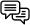

Premios Nobel de Literatura
2013 - 2022
ORDENADOS POR EL IDIOMA DE SU PRODUCCIÓN LITERARIA

InglésFrancés
Ruso
Polaco
Alemán
Consultado en All Nobel Prizes in Literature
2013 - 2022
ORDENADOS POR EL IDIOMA DE SU PRODUCCIÓN LITERARIA

InglésConsultado en All Nobel Prizes in Literature